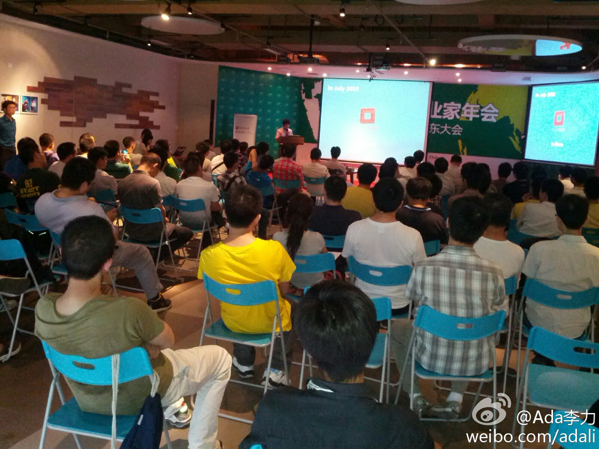

回复@杨珉_天天的理想:这么快就有结果了，上海 //@杨珉_天天的理想:啊，主席可以一起来搞不？ //@张文强-复旦: //@杨珉_天天的理想: 愿意放大学里面吗？复旦大学张江校区可以有场地提供。 //@云泉微博: //@GPUS-Hawk:帮转 //@ben_杜玉杰: 求赞助，上海哪家单位愿意赞助场地？CC @Ada李力@Ada李力:#OpenStack#中国行深圳站，3W咖啡的可容纳200人的场子，已经快坐满了。华为，腾讯的工程师来了不少。 我在:科苑路 


 科苑路
科苑路